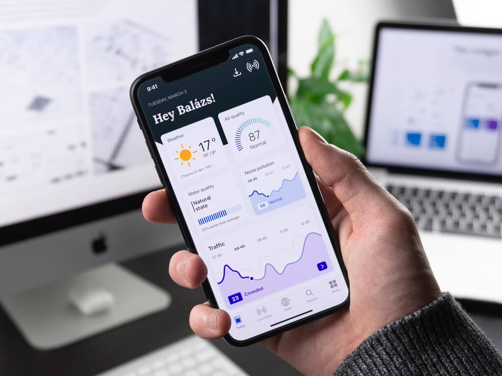
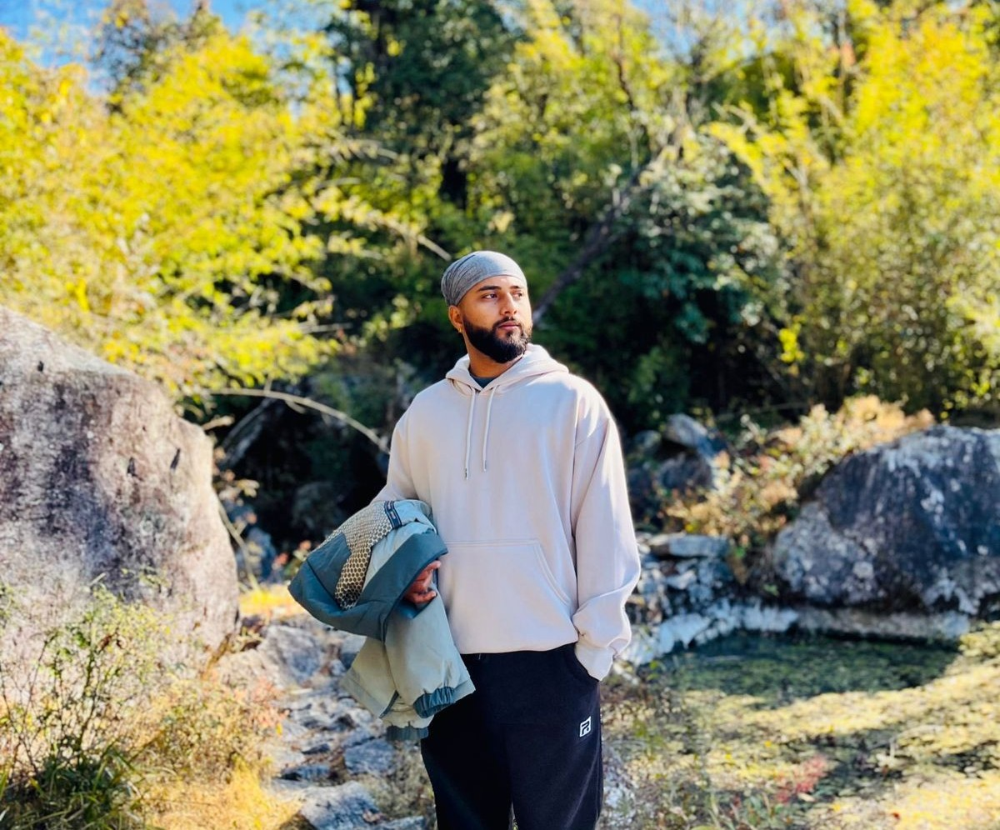
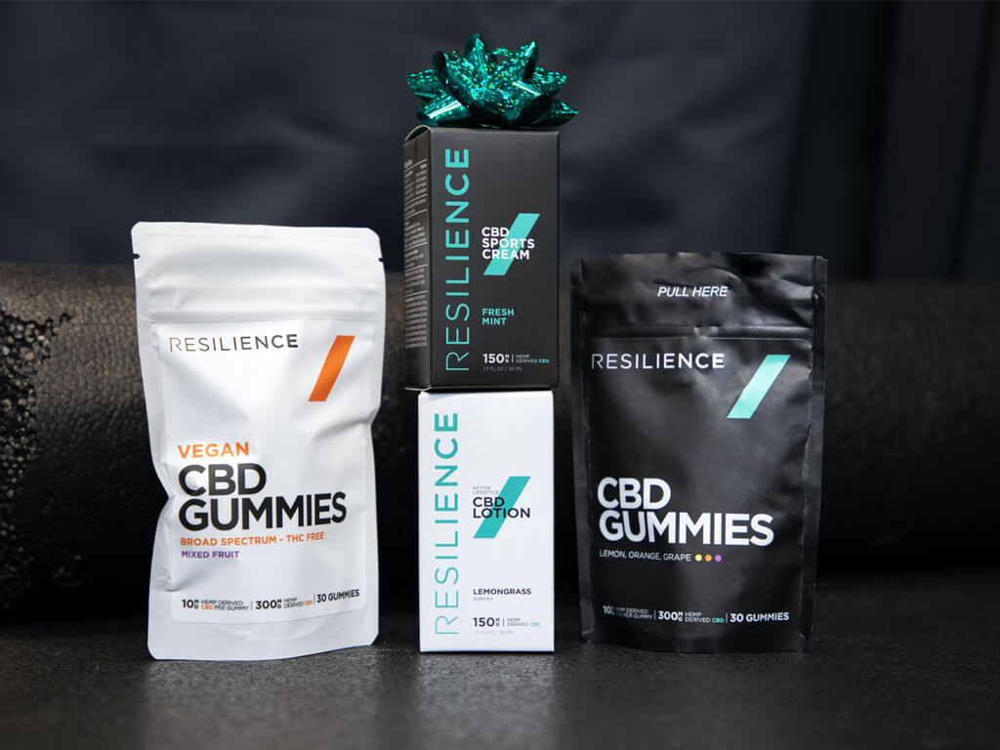

eSewa Experience Study
Exploring interface differences and user journeys to identify opportunities for a more consistent digital experience.
UI/UX DESIGNER · NEPAL
I'm Puzan Gautam. I turn ideas, messy flows and product problems into interfaces that are simple to understand and enjoyable to use.

SELECTED WORK
Selected projects and design explorations. The goal is always the same: make the experience easier, clearer and more useful.

Exploring interface differences and user journeys to identify opportunities for a more consistent digital experience.
A control interface concept designed around visibility, status and fast decisions.

A management-focused system concept for organizing donor information and operational workflows.
ABOUT ME
01I'm a UI/UX designer with a background in Information Management. I enjoy the space where design, technology and problem-solving overlap.
My experience includes UI/UX research, user-journey analysis, interface design and visual communication. I care about the small decisions that make a product feel obvious instead of confusing.
CAPABILITIES
My toolkit spans the thinking behind an experience and the practical skills needed to bring it to life.
Wireframes, visual design, responsive interfaces, interaction patterns and prototypes.
User journeys, interface comparisons and finding friction before it becomes a problem.
Enough front-end knowledge to understand implementation and build clean responsive pages.
Marketing graphics, presentations and visual assets with a consistent design language.
EXPERIENCE
UI/UX & Experience Intern
Worked across design and experience tasks including UI/UX comparisons, user-journey study, comparison templates and visual communication. Managed multiple tasks while working with an active product team.
Intern
Gained hands-on experience in telecommunications, customer support and technical and administrative workflows, while contributing to service and process improvement initiatives.
EDUCATION
Sudur Paschimanchal Campus, Dhangadhi
Galaxy Secondary School, Dhangadhi
HAVE A PROJECT?
Have an idea, a product that needs a better interface, or simply want to talk design?
gautampujan208@gmail.com